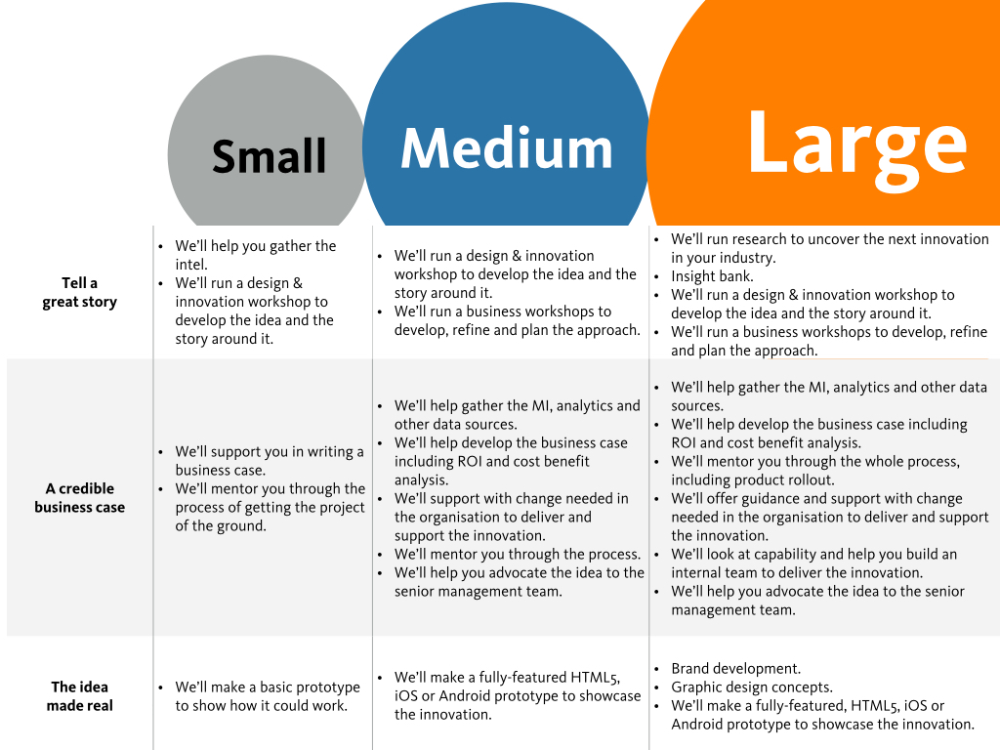

Ideas are just the beginning, getting them to market can be hard, cxpartners can help. Disruption is all around. Markets and industries that were once thought to be difficult to enter are aren’t anymore. AirBNB in travel, Bank Simple in finance, Uber in transport. Each industry is seeing new, innovative companies that threaten their future.
Modern business are not set up to innovate.
Thought leaders exist in modern companies but too often they struggle to get the resources and support to get their ideas to market. cxpartners can help. cxpartners are your partner helping develop the next big idea. Telling the story to help the organisation to see the benefits.
cxpartners will work with our client to develop a credible business case and advocate the idea. We’ll develop a prototype to showcase the idea. After all, seeing something real can open doors and give the organisation the confidence to take it forward.
It’s time to create radical change through digital initiatives, it’s time to innovate.
We plan who does what so we can develop a cost structure and project plan.
Using UX techniques to identify possible ideas.
Here we develop the idea from a business point of view. We plan the people, finance and partner elements.
We develop (or extend) the brand and produce a prototype telling the story.
AKA The Boss Level. We have all we need to tell our story. User need, business case and prototype. We need to ask the board for funding to build and launch.
The toolkit is designed to help a client do something new. To come up with a new idea, build a prototype and plan for launch.
It requires a collaborative, lean approach. Think workshops, sketching and rough and ready prototypes. This isn’t production ready code we’re looking for, rather production ready ideas.
Be that looking at a product they have and they need to reinvent or to come up with a new product that compliments their existing product.
It can be used as a complete programme of work but equally there are ideas contained here that can improve any project we work on.
The client can buy services from us in three different sizes, the bigger the size the more work we'll do.
